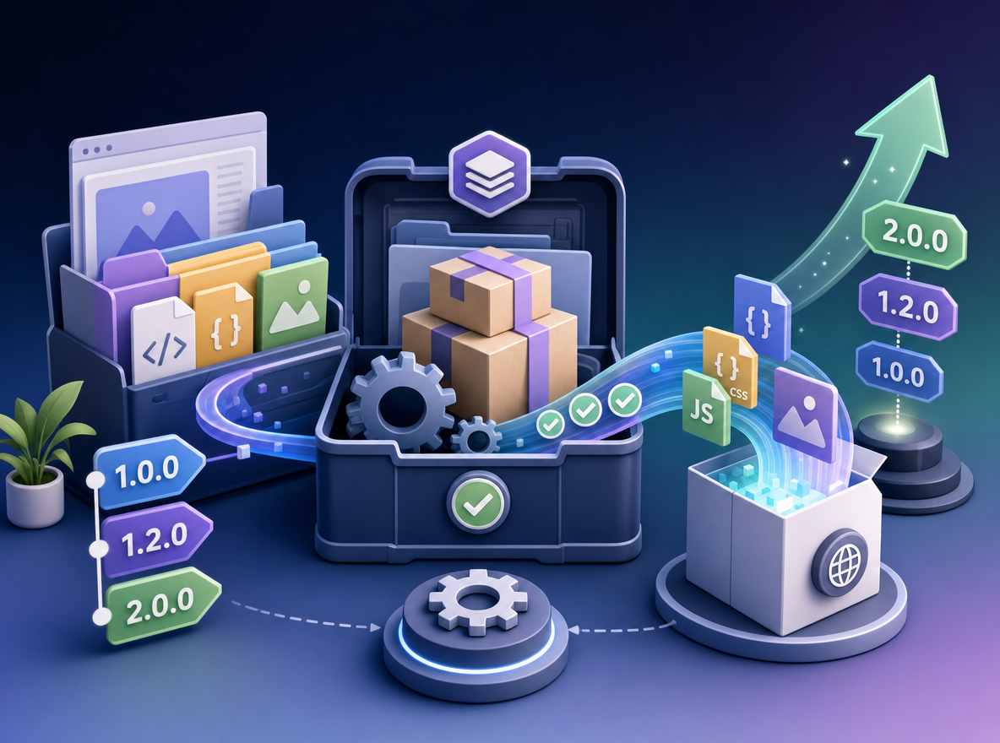

Web Package

This project does the following for your web project.
- Manages version numbers.
- Provides a framework for building assets before release.
Install with Composer
Installation requires explicit repositories:
composer config repositories.b75e6639b6e34e6633243ef36d0e6eee github https://github.com/aklump/web_packageRequire the latest stable version:
composer require aklump/web-package:^3.3... or require the dev channel:
composer config minimum-stability dev composer require aklump/web-package:@dev
Configuration
- [ ] Create a global alias for
bumppinned to the PHP version you installed composer with, e.g.:
alias bump='export WEB_PACKAGE_PHP=/usr/local/opt/php@8.1/bin/php; $HOME/Code/Packages/cli/web-package/web-package'
New Release Workflow
bump release
bump build
git add .
git commit -m 'Build assets.'
bump done